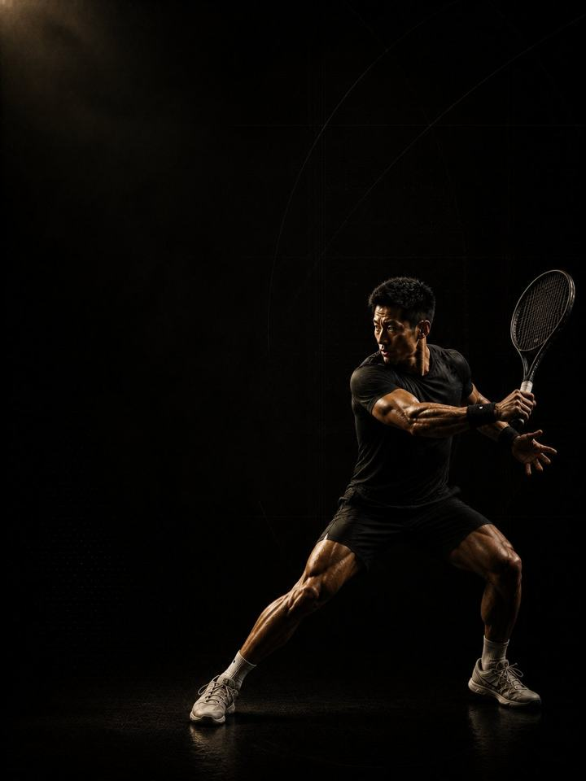

الرياضات الدورانية · المنافسة
حافظ على الكتف والطعنة معًا طوال موسم من المباريات.
- مناسب لـلاعبي البادل والتنس والإسكواش خلال الموسم
- أيام التدريبيومان في النادي أسبوعيًا حول مبارياتك، ويوم واحد في أسابيع البطولات
- مدة الجلسة48–60 دقيقة
- المعداتنادٍ متكامل، مع كرة طبية وزلّاجة وأقماع إن توفّرت
- الصيغةملف PDF للهاتف، وكل تمرين مرتبط بفيديو توضيحي
المتجر يفتح قريبًا. حاليًا ينسخ زر الشراء رسالة قصيرة ويفتح إنستغرام: الصقها وتستلم الملف هناك.
لمن هذا البرنامج
للاعبي البادل والتنس والإسكواش خلال موسم المنافسات. يتدرّب لاعبو المضرب بأقصى جهد خارج الموسم، ثم يتوقّفون في اللحظة التي يتضاعف فيها حجم الضربات فوق الرأس ثلاث مرات. وهذا عكس الصواب. فالكتف يتحمّل أكبر حمل خلال الموسم، ويحصل فيه على أقل دعم.
هذه الكتلة جلستان قصيرتان في الأسبوع تفعلان ثلاثة أمور ولا شيء غيرها: تحافظان على القوة التي بنيتها، وتُبقيان الكفة المدوّرة ومنتصف الظهر في العمل، وتحافظان على قوة الطعنة. وكل ما عدا ذلك محذوف عن قصد. ليست متعبة، وهي ما يمنع النصف الثاني من موسمك من أن يبدو أسوأ من الأول.
موقعها من السنة: الكتلة 3 من 4 في عائلة الرياضات الدورانية: الأساس، ثم البناء، ثم المنافسة، ثم الاستشفاء، بهذا الترتيب. طبّقها طوال موسم المنافسات. وإذا امتد الموسم أكثر من اثني عشر أسبوعًا، فكرّر الأسابيع 9–12 حتى ينتهي.
أسبوعك
يومان في النادي هما النسخة الأساسية. وفي أسبوع البطولة، اليوم 1 وحده، فهو يحمل الرفعة الثقيلة وتمارين الكتف، وهما الأمران اللذان يجب ألا ينقطعا.
| الأحد | الاثنين | الثلاثاء | الأربعاء | الخميس | الجمعة | السبت | |
|---|---|---|---|---|---|---|---|
| داخل الموسم، يومان | راحة | اليوم 1 | الملعب | اليوم 2 | الملعب | راحة | مباراة |
| أسبوع البطولة، يوم واحد | راحة | اليوم 1 | الملعب | مباراة | مباراة | راحة | مباراة |
لا تتمرّن أبدًا خلال 24 ساعة من مباراة. انقل أيام النادي لتناسب جدول مبارياتك.
كل جلسة تسير بالطريقة نفسها:
- الإحماء، 8–10 دقائق. التسلسل نفسه في كل جلسة. تفعيل الأرداف والوركين والكتفين قبل أي حركة سريعة.
- السرعة والقدرة الانفجارية، 12–15 دقيقة. رمي الكرة الطبية، والقدرة الدورانية، والقفزات الجانبية، قصيرة وحادّة، مع تعافٍ كامل بين المجموعات. وتتوقّف المجموعة لحظة انخفاض الجودة.
- القوة، 20–25 دقيقة. الرفعات المركّبة الثقيلة، مع دقيقتين إلى ثلاث دقائق بين المجموعات.
- تمارين الأنسجة، 8–10 دقائق. الدوران الخارجي ورفع الذراعين بشكل Y والتجديف للكتف، إضافةً إلى كوبنهاغن والنوردي. في النهاية، ولا تُحذف أبدًا.
الجلسات قصيرة عن قصد، 48–60 دقيقة. إذا تركت الجلسة كتفك متألمًا في المباراة التالية، فقد كانت أطول من اللازم، لا أخف من اللازم.
كيف تتقدّم الأسابيع الـ12
للتدريب داخل الموسم مهمة واحدة: أن تحتفظ بما بنيته بينما تأخذ الرياضة الأولوية. وللاعبي المضرب يعني ذلك أحمالًا ثقيلة بحجم منخفض جدًا، وتدريب الكفة المدوّرة ومنتصف الظهر كل أسبوع مهما كان جدول المباريات، والحفاظ على قوة الطعنة حتى لا تكون الساقان سبب خسارتك في أواخر المباراة. ولا يعني ذلك التدرّج. فمطاردة أرقام النادي في منتصف الموسم هي الطريقة التي يصل بها اللاعبون إلى مبارياتهم متعبين أصلًا.
| الأسابيع 1–4 | الأسابيع 5–8 | الأسابيع 9–12 | |
|---|---|---|---|
| المرحلة | الحفاظ على القوة | الحفاظ على القدرة الانفجارية | تحمّل الكتف |
| الهدف | الحفاظ على القوة القصوى خلال أسابيع المنافسة | الحفاظ على القدرة الانفجارية لكتف الرمي خلال أسابيع المنافسة | الحفاظ على قوة الكفة المدوّرة وتحمّل أنسجة الكتف |
| كيف تبدو | ثلاث مجموعات ثقيلة لكل رفعة، وتمارين الكفة المدوّرة كاملة | القوة الثقيلة نفسها بحجم منخفض، مع رميات أقل وأكثر حدّة | ينخفض الحجم مرة أخرى، وتبقى تمارين الكفة المدوّرة، ولا يُضاف شيء جديد |
| المجموعات الفعلية أسبوعيًا | 36 | 38 | 36 |
| متوسط الجهد | جهد 7.0/10، يتبقى نحو 3 تكرارات | جهد 7.3/10، يتبقى نحو 2.7 | جهد 7.1/10، يتبقى نحو 2.9 |
| مرات الهبوط أسبوعيًا | 40 | 40 | 40 |
| الرميات أسبوعيًا | 42 | 16 | 42 |
المرحلة في لمحة
المجموعات التدريبية أسبوعيًا حسب ما تدرّبه. الخط المتقطع هو مستوى الجهد.
موقع هذه المرحلة في السنة التدريبية
نفّذ المراحل الأربع بالترتيب لتكتمل سنة تدريبية كاملة.
الجهد (RPE) تقييم من 1 إلى 10 لمدى صعوبة المجموعة: «جهد 7/10» يعني أنه يتبقى في الخزان نحو 3 تكرارات. والمجموعات الفعلية لا تشمل الإحماء.
أسابيع التخفيف: في الأسبوعين 6 و12 تُقسم المجموعات على اثنين، والأسبوع 12 أسبوع تخفيف كامل. وفي سلسلة من البطولات، خذ أسبوع التخفيف مبكرًا. التقويم هو من يقرّر، لا الصفحة.
القواعد التي تجعله ينجح
- ثقيل، لكن بقدر قليل جدًا. ثلاث مجموعات ثقيلة لكل رفعة عند جهد 7–8/10. الوزن الثقيل يحافظ على القوة، والحجم يسبّب الألم العضلي، والألم العضلي يكلّفك المباريات.
- تمارين الكفة المدوّرة هي جوهر هذه الكتلة. الدوران الخارجي ورفع الذراعين بشكل Y والتجديف في كل جلسة طوال الأسابيع الاثني عشر. إذا حذفت شيئًا، فلا تحذف هذا أبدًا.
- ليس خلال 24 ساعة من مباراة أبدًا. الجلسة التي تضرّ بمباراة قد فشلت، مهما كان شعورك فيها جيدًا.
- راقب ثبات الدوران الخارجي، لا الألم. حين يبدأ ثبات جهة المضرب بالانخفاض، خفّف حجم الملعب ذلك الأسبوع. انتظار الألم يعني الانتظار حتى تصبح إصابة بالفعل.
- لا تلاحق الأرقام الشخصية. إذا كانت رفعاتك ترتفع بقوة خلال الموسم، فالنادي يأخذ طاقة تحتاجها الرياضة. الحفاظ على المستوى هو النجاح هنا.
- رقم القفزة أرخص اختبار للتعب. ثلاث وثبات طويلة من الثبات في بداية كل يوم 1، واحتفظ بأفضلها. إذا كانت أقل بأكثر من 10% من متوسطك المتحرّك، فخفّف ذلك اليوم: احذف تمارين القدرة الانفجارية ومجموعة واحدة من كل رفعة.
- احسب مرات الهبوط، لا المجموعات فقط. كل قفزة وحجلة ووثبة ونزول يُحسب، بما في ذلك قفزات الإحماء. أما الرميات والعَدْو والعبور الجانبي فوق الصندوق وخطوات التحفّز فلا تُحسب. أبقِ الأسبوع تحت نحو 100 هبوط داخل الموسم، والمباريات وجلسات الملعب تُحسب فوق ذلك.
المصطلحات
- الكتلة التدريبية: 12 أسبوعًا. هذا البرنامج. تطوّر الكتلة الواحدة مجموعة واحدة من الصفات إلى مستوى محدّد.
- المرحلة (الدورة المتوسطة): 4 أسابيع. تستهدف كل منها صفة واحدة. وأربعة أسابيع اختيار لا قاعدة، فالمدة تتبع الهدف.
- الأسبوع التدريبي (الدورة الصغرى): حيث يرتفع الجهد، وتُضاف المجموعات، ويقع أسبوع التخفيف.
- السنة التدريبية (الدورة الكبرى): أربع كتل بالترتيب (الأساس، والبناء، والمنافسة، والاستشفاء)، نحو 48 أسبوعًا.
كيف تقيس تقدّمك
داخل الموسم، رقمان هما المهمان: ثبات الدوران الخارجي في جهة المضرب، ورقم القفزة الأسبوعي. وتعيد الاختبار في أسبوعي التخفيف، 6 و12.
شكل التقدّم الجيد
- الأسابيع 1–4: يتوقّف النادي عن الشعور بأنه عبء إضافي، ويهدأ الكتف بين المباريات.
- الأسابيع 5–8: يبقى ثبات الدوران الخارجي ثابتًا بدلًا من أن ينخفض. وفي منتصف الموسم، هذا فوز.
- الأسابيع 9–12: تنهي الموسم وإرسالك بالجودة التي بدأته بها.
تكتمل الكتلة عندما: ينتهي الموسم وإرسالك بالجودة التي كان عليها في بدايته، ولم ينخفض ثبات الكتف أبدًا. الحفاظ على المستوى هو الهدف. وإذا كانت أرقامك ترتفع بقوة، فأنت تتدرّب أكثر مما يحتمله الموسم، وسيظهر ذلك في الملعب.
احترم أسبوعك
احسب كل شيء: المباريات، وجلسات الملعب، والنادي، والنوم. القفزات المفاجئة في حمل التدريب الأسبوعي هي أكثر ما يتنبّأ بالإصابة موثوقيةً في رياضة الهواة. في أسبوع مباريات ثقيل، احذف جلسة في النادي أو قلّص تمارين القدرة الانفجارية، لكن لا تضحِّ أبدًا بالرياضة والتعافي معًا. واحمِ 7–9 ساعات من النوم، فهو أقوى أداة متاحة لتحسين الأداء، وأرخصها.
الأدلة العلمية
كل برنامج في المكتبة مبني على أبحاث منشورة، وقوة تلك الأبحاث مذكورة صراحةً لا ضمنًا. وحيث تكون الأدلة محدودة، تقول الصفحة ذلك.
| النتيجة | المصدر | ما لا تُظهره |
|---|---|---|
| تدريب القوة يخفض الإصابات الرياضية إلى أقل من ثلث معدلها في المجموعة الضابطة. أما الإطالة فلا تخفضها. | Lauersen, Bertelsen & Andersen, British Journal of Sports Medicine 2014. Meta-analysis of 25 RCTs, 26,610 participants. PMID 24100287 | نسبة الخطر 0.32 لتدريب القوة و0.96 للإطالة. تفاوتت التجارب كثيرًا، ولم تكن الجرعة موحّدة. |
| أي وصفة تدريب معقولة أفضل من عدم التدريب. الأحمال الأثقل تحتل المرتبة الأعلى للقوة، والمجموعات المتعددة تحتل المرتبة الأعلى لحجم العضلات. | Currier, McLeod, Banfield et al., British Journal of Sports Medicine 2023. Network meta-analysis, 178 strength and 119 hypertrophy studies. PMID 37414459 | كانت الفروق بين الوصفات صغيرة، وكلها نجحت. |
| البرامج التي تتضمّن تمرين نورديك للعضلات الخلفية للفخذ تخفض إصابات العضلات الخلفية للفخذ إلى النصف تقريبًا. | van Dyk, Behan & Whiteley, British Journal of Sports Medicine 2019. Meta-analysis, 15 studies, 8,459 athletes. PMID 30808663 | نسبة الخطر 0.49، أو 0.55 بعد استبعاد الدراسات عالية خطر التحيّز. وهي تقيس البرامج التي تتضمّن التمرين، لا التمرين وحده. |
| تمرين واحد للعضلات الضامّة، ثلاث مرات أسبوعيًا قبل الموسم ومرة أسبوعيًا خلاله، خفض مشكلات الفخذ الداخلي المبلَّغ عنها بنسبة 41%. | Harøy et al., British Journal of Sports Medicine 2019. Cluster-randomised trial, 35 teams, 652 male footballers. PMID 29891614 | نسبة الأرجحية 0.59. البيانات مبلَّغ عنها ذاتيًا، وفي كرة القدم شبه الاحترافية للرجال فقط. ولم تُكرَّر بعد على النساء أو في رياضات أخرى. |
ماذا بعد
بعد 12 أسبوعًا:
- الكتلة التالية: الرياضات الدورانية · الاستشفاء
- منطقة واحدة تحتاج إلى عمل: السلسلة التصحيحية
قبل الشراء: احصل على موافقة طبية أولًا إذا
- كان لديك ألم في الصدر، أو ضيق تنفس غير معتاد، أو خفقان، أو دوخة أثناء المجهود.
- كان لديك ضغط دم مرتفع غير منضبط، أو مرض قلبي معروف، أو خضعت لعملية جراحية مؤخرًا.
- كنتِ حاملًا أو بعد الولادة بفترة قصيرة. احصلي على موافقة وبرنامج مخصص أولًا.
- كان لديك ألم حاد في مفصل واحد لا يهدأ. ابدأ ببرنامج أكسس التصحيحي المناسب.
هذا البرنامج إرشاد عام للياقة البدنية، ولا يغني عن التقييم الطبي.
المتجر يفتح قريبًا. حاليًا ينسخ زر الشراء رسالة قصيرة ويفتح إنستغرام: الصقها وتستلم الملف هناك.